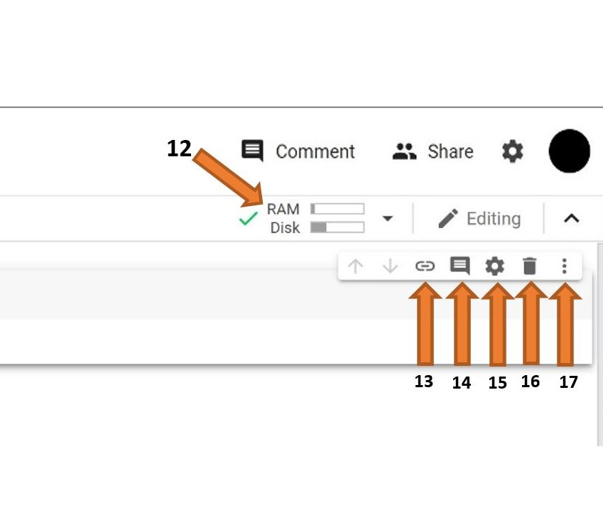

15 Using Google Colab
Google Colab (short for “Colaboratory”) is a free cloud-based platform that lets you write and execute Python code through your browser. Think of it as a Python notebook that runs on Google’s servers instead of your computer—no installation required.
For this course, all Mini Labs are designed to run in Colab, so you can complete assignments without installing Python locally.
15.1 Why Colab?
- No installation: Works entirely in your browser
- Free GPU access: For computationally intensive tasks (though we won’t need this much)
- Easy sharing: Notebooks can be shared like Google Docs
- Persistent storage: Save notebooks to your Google Drive
- Pre-installed libraries: Most data science packages already available
15.2 Getting Started
15.2.1 1. Connect Colab to Google Drive (Optional but Recommended)
While not strictly necessary, connecting Colab to Google Drive makes it easier to access and save notebooks.
Install the Colab app:
- Go to Google Drive
- Click the + New button (top left)
- Select More → Connect more apps
- Search for “Colaboratory”
- Click Install
- Grant permissions when prompted
Now you can open .ipynb (notebook) files directly from Drive using Colab.
15.2.2 2. Opening Mini Labs
For this course, you’ll typically open Mini Labs in one of two ways:
Option A: Via Colab Badge (Recommended)
Each tutorial has a Colab badge at the top that looks like this:

Clicking this badge opens the notebook directly in Colab from the course GitHub repository.
Option B: Upload to Drive
- Download the
.ipynbfile from the course repository - Upload to your Google Drive
- Double-click to open with Colab
When you open a notebook from the course GitHub, you’ll see a warning that you can’t save changes. Click File → Save a copy in Drive to create your own editable version.
This saves your work and lets you experiment without affecting the original.
15.3 Understanding the Colab Interface
When you first open a Colab notebook, you’ll see an interface with several key components. Here’s what everything does:

Key Interface Elements:
Files (📁): Upload datasets and files from your computer or Google Drive. Files uploaded here are temporary.
Code Snippets: Find pre-written code for common tasks like installing libraries or importing data.
Run Cell (▶️): Click to execute the code in the adjacent cell. Shortcut:
Shift + Enterruns the cell and moves to the next one.Table of Contents: Create and navigate between sections in your notebook for better organization.
Menu Bar: Standard application menu for file operations. Key menus:
- File: Open, upload, download, save notebooks
- Edit: Cut, copy, paste cells
- Runtime: Manage your Python environment
File Name: Click to rename your notebook. Don’t change the
.ipynbextension!Insert Code Cell (+Code): Add a new code cell below the currently selected cell.
Insert Text Cell (+Text): Add a new text (Markdown) cell below the currently selected cell.
Cell: The main work area where you write code or text. Click inside to edit.
Output: Results from running code appear here, including text, tables, graphs, and error messages.
Clear Output: Remove the output display (doesn’t delete the cell or code).

Additional Interface Elements:
RAM and Disk: Shows your resource usage. All code runs on Google’s servers, not your computer. This means even slow computers can handle large computations. However, Google limits RAM and disk space per user, so be mindful with very large datasets.
Link to Cell: Creates a URL that links directly to the selected cell. Useful for sharing specific parts of notebooks.
Comment: Add a comment about the cell (for collaboration or notes). This is different from code comments inside the cell.
Settings: Customize notebook appearance—theme (dark/light), font type, font size, indentation width, and more.
Delete Cell: Permanently removes the selected cell. Use with caution!
More Options (⋮): Additional cell operations:
- Cut/copy cell
- Add form fields
- Hide code (show only output)
Keep an eye on the RAM/Disk indicator (12). If you’re running out of memory: - Restart the runtime (Runtime → Restart runtime) - Delete large variables you no longer need - Process data in smaller chunks
15.3.1 The Notebook Structure
A Colab notebook consists of cells, which come in two types:
Code Cells (have a play button):
# This is a code cell
print("Hello, Colab!")Text Cells (formatted text): - Used for explanations, instructions, and notes - Written in Markdown (a simple formatting language) - You’re reading text cells in this tutorial right now
15.3.2 Running Code Cells
There are several ways to run a code cell:
- Click the play button (▶️) on the left side of the cell
- Keyboard shortcut:
Shift + Enter(runs cell and moves to next) - Alternative:
Ctrl + Enter(runs cell, stays in same cell)
What happens when you run a cell: - Code executes on Google’s servers - Output appears below the cell - Any variables or data created remain in memory for the session
Cells can be run in any order, but the logical order matters. If Cell 2 uses a variable defined in Cell 1, you must run Cell 1 first.
Colab shows execution numbers like [1], [2], etc. to track run order.
15.3.3 Working with Code
Editing code cells: - Click inside the cell to edit - Colab provides syntax highlighting and auto-completion - Press Tab for code suggestions - Ctrl + / to comment/uncomment lines
Common operations: - Add a cell: Click + Code or + Text buttons - Delete a cell: Click the trash icon (hover over cell for menu) - Move cells: Click and drag the cell - Copy/paste: Use standard keyboard shortcuts
15.4 Running Mini Labs: Step-by-Step
Here’s a typical workflow for completing a Mini Lab:
15.4.1 Step 1: Open the Lab
Click the Colab badge from the tutorial or mini labs page.
15.4.2 Step 2: Save Your Copy
File → Save a copy in Drive
This creates a version you can edit. The copy will open automatically.
15.4.3 Step 3: Read the Instructions
Each Mini Lab starts with text cells explaining: - What you’ll learn - Prerequisites - Expected outcomes
15.4.4 Step 4: Run Setup Cells
Many labs start with installation cells that look like this:
%%capture
!pip install polars matplotlib%%capturesuppresses verbose output!pip installinstalls Python packages- Run these cells first (they may take 30-60 seconds)
If a package installation requires a runtime restart, you’ll see a message. Click the RESTART RUNTIME button when prompted. You’ll then need to re-run the installation cell.
15.4.5 Step 5: Work Through the Lab
- Read each text cell carefully
- Run each code cell in order
- Examine the outputs
- Try to understand what each code block does
- Complete any questions or exercises
15.4.6 Step 6: Experiment (Optional but Encouraged!)
After completing the lab: - Modify code to see what happens - Try different parameter values - Add your own cells with notes or experiments - Test edge cases
Your copy is yours to break! Experimentation is how you learn.
15.4.7 Step 7: Save Your Work
Colab auto-saves to your Drive periodically, but you can manually save: - File → Save (or Ctrl + S)
15.5 Common Issues and Solutions
15.5.1 Issue: “No module named X”
Problem: You tried to import a package that isn’t installed.
Solution: Add a cell with:
!pip install package-nameThen run it and re-run the import cell.
15.5.2 Issue: “Name ‘variable’ is not defined”
Problem: You’re using a variable that hasn’t been created yet.
Solution: - Make sure you’ve run all previous cells in order - Check that the variable is defined in an earlier cell - Look at execution numbers to see run order
15.5.3 Issue: Code runs forever (spinning circle)
Problem: Cell is taking too long or stuck in an infinite loop.
Solution: - Click the Stop button (square icon) next to the cell - Check your code for infinite loops - For long operations (like parsing large corpora), be patient—some cells take 2-5 minutes
15.5.4 Issue: “Runtime disconnected”
Problem: Inactive for too long, or Colab session expired.
Solution: - Click RECONNECT button - You’ll need to re-run cells from the top - (Another reason to run labs in one sitting when possible!)
15.5.5 Issue: Lost my changes
Problem: Forgot to save a copy, or closed without saving.
Solution: - Always click “Save a copy in Drive” at the start - Check Drive’s “Recent” or “Colab Notebooks” folder - Colab auto-saves, so recent changes should be there
15.6 Keyboard Shortcuts
Speed up your workflow with these shortcuts:
Execution: - Shift + Enter: Run cell and move to next - Ctrl + Enter: Run cell, stay in place - Ctrl + Shift + Enter: Run cell, insert new cell below
Cell operations: - Ctrl + M, B: Insert cell below - Ctrl + M, A: Insert cell above - Ctrl + M, D: Delete selected cell - Ctrl + M, M: Convert cell to text (Markdown) - Ctrl + M, Y: Convert cell to code
Editing: - Ctrl + /: Comment/uncomment code - Tab: Auto-complete - Shift + Tab: Show function documentation
View all shortcuts: Ctrl + M, H
15.7 Working with Data
Mini Labs often load data from URLs (like our course GitHub repository):
import polars as pl
# Load data directly from web
df = pl.read_parquet("https://github.com/browndw/humanities_analytics/raw/refs/heads/main/data/data_tables/sample_corpus.parquet")This approach is preferred for this course because: - No need to mount Google Drive - Data stays current with course repository - Simpler and more reliable
If you want to work with your own data files:
- Click the folder icon (📁) in the left sidebar
- Click the upload button (📤)
- Select your file
Note: Uploaded files are temporary and disappear when the runtime disconnects!
15.8 Understanding Runtime and Sessions
What is a runtime? - The Python environment running your code - Includes memory, variables, installed packages - Allocated when you open a notebook, released when you close it
Important facts: - Free Colab runtimes have time limits (usually 12 hours) - Inactive sessions disconnect after ~90 minutes - All variables/data in memory are lost when runtime disconnects - Installed packages must be reinstalled each session
Best practice: Complete labs in one sitting when possible, or at least reach a good stopping point before closing.
15.9 Tips for Success
15.9.1 For Complete Beginners
- Run cells in order - Don’t skip around at first
- Read error messages - They often tell you exactly what’s wrong
- Start simple - Get the basic workflow down before experimenting
- Ask for help - If stuck for more than 10 minutes, reach out
15.9.2 For Experienced Coders
- Experiment freely - Your copy won’t break the original
- Read instructions anyway - Some cells require specific setup
- Check dependencies - Package versions may differ from your local setup
- Share solutions - Help others debug issues
15.9.3 For Everyone
- Save early, save often - Make that copy in Drive immediately
- Name your notebooks - “Copy of Mini_Lab_01” isn’t helpful later
- Add notes - Use text cells to document your thinking
- Compare outputs - Check if your results match expected outputs
- Restart when confused - Sometimes a fresh runtime clears mysterious errors
15.10 Privacy and Sharing
Your notebooks: - Stored in your Google Drive - Private by default - You control sharing permissions
To share your work: 1. Click the Share button (top right) 2. Add instructor email or get shareable link 3. Set permissions (view, comment, or edit)
What we can see: - Only notebooks you explicitly share with instructors - Not your entire Drive - Not your browsing or other Google activity
15.11 Differences from Local Python
If you’ve used Python on your computer before, note these Colab-specific features:
Special commands: - !command - Runs shell commands (like !pip install) - %%capture - Suppresses cell output - %load_ext - Loads IPython extensions
Pre-installed libraries: - NumPy, Pandas, Matplotlib already available - But course-specific packages (docuscospacy, moodswing) need installation
File system: - You’re on a Linux VM, not your local machine - Files uploaded are temporary - Use URLs for data loading in this course
15.12 Getting Help
Within Colab: - Hover over function names for documentation - Shift + Tab shows function parameters - ?function_name displays full documentation
Course resources: - Tutorial pages explain concepts - Mini Lab instructions guide you step-by-step - Discussion forums for peer help - Office hours for instructor support
General Python help: - Python documentation - Stack Overflow (search before asking) - Polars documentation
15.13 Next Steps
Ready to get started? Try:
- Open Mini Lab 01 via the Colab badge
- Save a copy to your Drive
- Work through the first few cells
- Get comfortable with the interface
Colab might feel unfamiliar at first, but you’ll quickly get comfortable. Most students find it more convenient than installing Python locally, and it ensures everyone has the same environment.
The mini labs are designed for learners at all levels—just work through them at your own pace.
15.14 Quick Reference Card
ESSENTIAL OPERATIONS
- Save a copy: File → Save a copy in Drive
- Run cell: Shift + Enter
- Stop execution: Click stop button (■)
- Add code cell: Click + Code
- Add text cell: Click + Text
COMMON ISSUES
- Import error → !pip install package-name
- Name error → Run earlier cells first
- Stuck → Click stop, check for infinite loops
- Disconnected → Reconnect, re-run from top
REMEMBER
✓ Save a copy first!
✓ Run cells in order
✓ Be patient with long operations
✓ Experiment after completing the lab
✓ Errors are learning opportunities!Now you’re ready to dive into the mini labs. Happy coding!